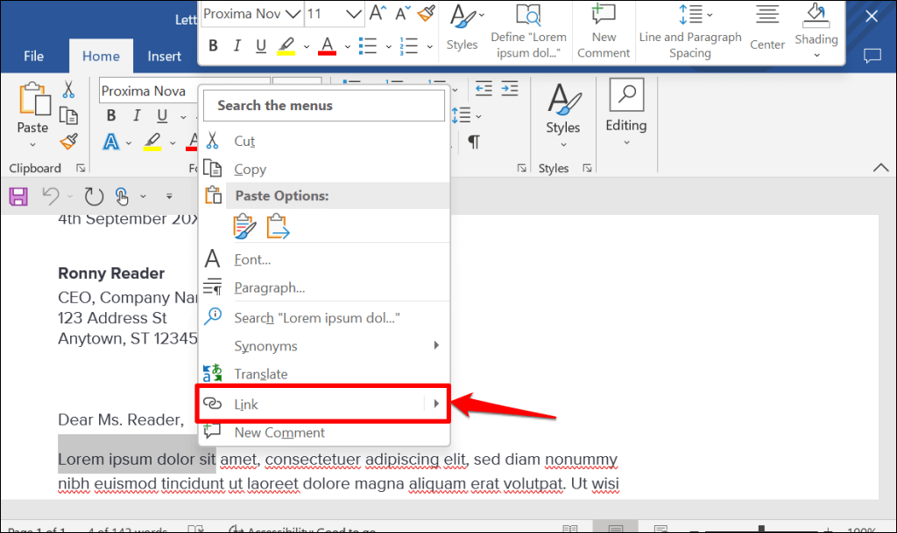

Bine ați venit într-un loc unde puteți învăța funcționalitățile de bază din Microsoft Word!
- Selectează textul pe care vrei să-l transformi în link.
- Click dreapta și selectează „Link” sau mergi la „Insert” > „Link”.
- Introdu adresa URL și apasă OK.
Poți transforma un cuvânt sau o propoziție într-un link care duce către o pagină web, o altă locație din document sau chiar un fișier. Aceasta este o funcție utilă în documentele digitale pentru navigare rapidă.
